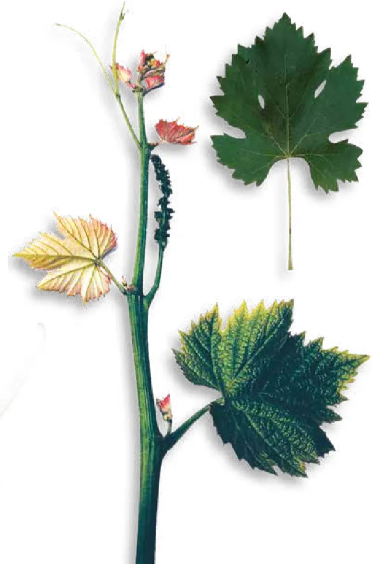

Kapitel 3 · Die portugiesischen Rebsorten
Síria (W) / Roupeiro / Códega
Herkunft:
Diese Sorte gibt es in Portugal schon lange unter verschiedenen Synonymen. Ihr Hauptname ließ sich erst vor Kurzem einigermaßen klar bestimmen. In der Literatur taucht sie in der zweiten Hälfte des 19. Jahrhunderts auf, mit Erwähnungen bei F. Lapa, Vila Maior (1875) und Cincinnato (1900); damals wurde sie unter verschiedenen Namen fast im ganzen Land angebaut.
Sortenmerkmale:
Sehr ertragreiche Sorte mit guten weinbaulichen Eigenschaften, in fast allen Regionen Portugals heimisch. Sie ergibt fruchtige Weine, die sehr bald nach der Gärung trinkreif sind. Die besten Weißweine aus dieser Sorte entstehen in großer Höhe; in den 1980er-Jahren erfreuten sie sich enormer Beliebtheit, verloren dann aber in tiefer gelegenen Regionen wie Tejo und Alentejo wegen der begrenzten Lebensdauer der Weinberge an Bedeutung. Jung ist die Síria ein Wein par excellence. Mit dem Alter zeigt der Wein aus warmen Gebieten einen deutlichen Rückgang seiner Aromen.

Regionale Einstufung:
DOC-Qualitätswein: Porto, Douro, Távora-Varosa, Beira Interior, Tejo, Palmela, alle Unterregionen des Alentejo, Lagos, Portimão, Lagoa, Tavira.
IPR-Qualitätswein: Chaves, Valpaços.
Landwein: Trás-os-Montes, Unterregion Beira Alta der Beira Interior, Provinz Estremadura, Tejo, Terras do Sado, Alentejo und Algarve.
Morphologie:
Junger Trieb (Form der Triebspitze): offen, mit allgemein starker Anthocyanfärbung, Behaarung mittlerer Dichte.
Junges Blatt: gelblich grün mit karminrotem Rand. Sehr dichte Behaarung auf der Unterseite.
Junger Trieb: grüne Knospen, Knoten und Internodien. Kurze Ranken.
Blütenstand (Blütengeschlecht): zwittrig.
Ausgewachsenes Blatt: mittelgroß, fünfeckig, fünflappig, mittelgrüne Spreite, unregelmäßiges Profil, leichte Blasigkeit der Oberseite; Spreite am Stielansatz gewellt, konvexe Zähne. Offene V-förmige Stielbucht, von Adern begrenzt. Überlappende V-förmige obere Seitenbuchten, mittlere anliegende und aufrechte Behaarung auf der Unterseite.
Traube: mittelgroß bis groß, geschultert, konisch; mittlere Dichte. Kurzer, halb verholzter Stiel.
Beere: mittelgroß bis groß, gleichmäßig, eiförmig, grünlich gelb. Haut mittelstark, mittel bereift. Fruchtfleisch farblos, sehr saftig. Kurzes Stielchen.
Phänologie:
Austrieb: normal, 5 Tage nach der Fernão Pires.
Blüte: normal, 4 Tage nach der Fernão Pires.
Farbumschlag der Beere: normal, 9 Tage nach der Fernão Pires.
Lesereife der Beere: spät, zwei Wochen nach der Fernão Pires.
Vegetatives und agronomisches Potenzial:
Wuchskraft der Triebe: mittel bis hoch.
Schnittholzgewicht: 3–4 t/ha.
Triebhaltung (Wuchsform): halbaufrecht.
Trieblänge: mittel, einige lang.
Neigung zur Geiztriebbildung: mittel.
Mehrfachaustrieb: 18 % der Knospen.
Ertrag: Index 337. Statistischer RNSV-Wert: 1,96 kg/Rebe (Mittel von mindestens 40 Klonen in Pinhel über 3 Jahre).
Ertragsbeständigkeit: anfangs hoch; nimmt in den Folgejahren ab, danach unbeständig.
Gleichmäßigkeit des Ertrags: gleichmäßig.
Winkler-Index: 1 = 1,04; 2 = 1,38; 3 = 1,4 Blütenstände je Trieb.
Empfindlichkeit gegenüber abiotischen Faktoren: Gefahr des Austrocknens der Trauben.
Anfälligkeit für Pilzkrankheiten: anfällig für Oidium und Botrytis, etwas für Peronospora und Schwarzfleckenkrankheit (Exkoriose).
Anfälligkeit für Schädlinge: anfällig für Rote Spinne.
Traubengröße: groß (400 g).
Dichte der Traube: mittel.
Beerenhaut: dünn.
Erziehungssystem: einfacher oder doppelter Guyot, aber an alle Systeme anpassbar.
Bodenansprüche: warme Hanglagen (Douro).
Klimaansprüche: Für sortengerechte Erträge sollten die Weinberge in warmem, gemäßigtem Klima liegen, besonders ohne frühe Regenfälle im September.
Bewässerung: vorteilhaft, solange sie nicht zu übermäßigem Ertrag führt.
Verrieseln/Kleinbeerigkeit: gering.
Verderb reifer Beeren: anfällig bei Regen im September.
Önologie:
Weintyp: Tischwein, Branntwein.
Potenzieller Alkoholgehalt: mittel (12,5 % vol.). Statistischer RNSV-Wert: 11,83 % vol. (Mittel von mindestens 40 Klonen in Estremoz über 4 Jahre).
Natürliche Säure des Mostes: mittel (4–5 g/l). Statistischer RNSV-Wert: 5,57 g/l (Mittel von 40 Klonen in Estremoz über 4 Jahre).
Oxidationsrisiko des Mostes: keines.

Farbintensität des Weins: hell.
Oxidationsrisiko des Weins: mittel, je nach Lage des Weinbergs.
Aromaprofil: Terpenoide gesamt 114 μg/l (1997), 170 μg/l (1998); Benzenoide gesamt 681 μg/l (1997), 828 μg/l (1998); Norisoprenoide gesamt 210 μg/l (1997), 406 μg/l (1998).